Portfolio 2026 · Bachelor of Pharmacy
Hi, I'm Aisyah.
Aisyah Nabila Putri, S.Farm
Bachelor of Pharmacy graduate from Sekolah Tinggi Ilmu Farmasi Padang. Completed a community pharmacy internship, researched the phenolic content and antioxidant activity of fermented garlic, and regularly speaks in public as an MC for campus events.
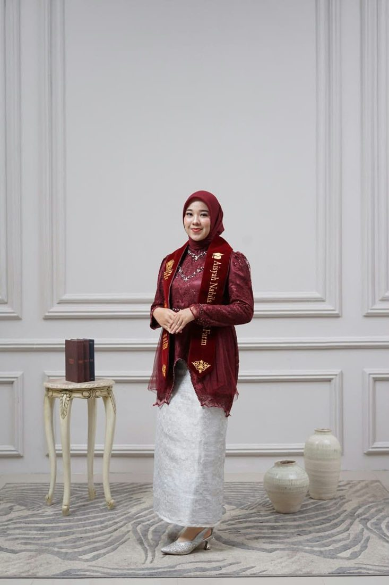
Professional profile
What I bring
Pharmacy service skills from a community pharmacy, laboratory precision from research, and confidence from the campus event stage.
Pharmacy ServicesPrescription screening, dispensing, patient counseling, drug information
Laboratory AnalysisFolin-Ciocalteu, UV-Vis spectrophotometry, DPPH, standard curves
Pharmaceutical KnowledgePharmaceutics, pharmaceutical chemistry, pharmacognosy, pharmacology
Management & RegulationDrug inventory, pharmacy regulations and ethics
Public SpeakingMC for academic events, seminars, and pharmacist oath ceremonies
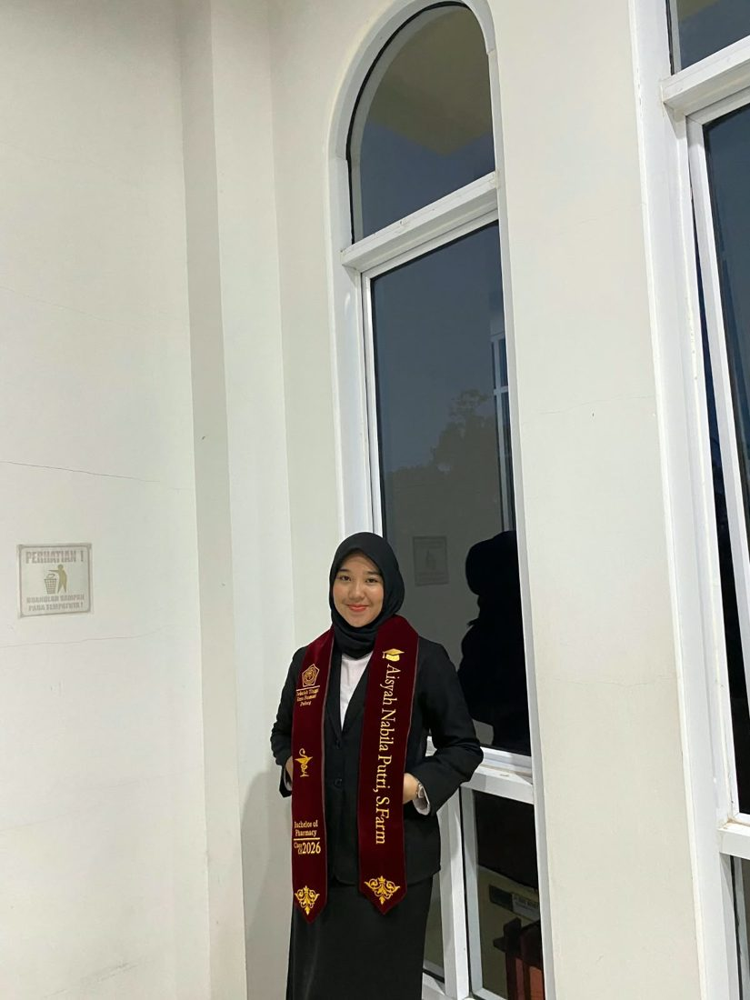
- Began the Bachelor of Pharmacy at STIFARM Padang
- Managerial Leadership Training (LKMMF) 1
- MC, 19th Dies Natalis of STIFARM Padang
- Committee, PKKMB new student orientation
- Pharmacy internship at Apotek Keluarga 16
- MC, 6th Pharmacist Oath Ceremony
- Graduated Bachelor of Pharmacy, GPA 3.41
- Prescription service
- Patient counseling
- Lab analysis
- Stock management
- Public speaking
- Teamwork
Academic background
Education
Sekolah Tinggi Ilmu Farmasi Padang
Undergraduate Pharmacy Program · Bachelor of Pharmacy (S.Farm) · Padang, West Sumatra
2022 – 2026Total Phenolic Content Analysis and Antioxidant Activity Test of the Ethyl Acetate Fraction of Fermented Garlic (Allium sativum L.) Ethanol Extract Using the DPPH Method
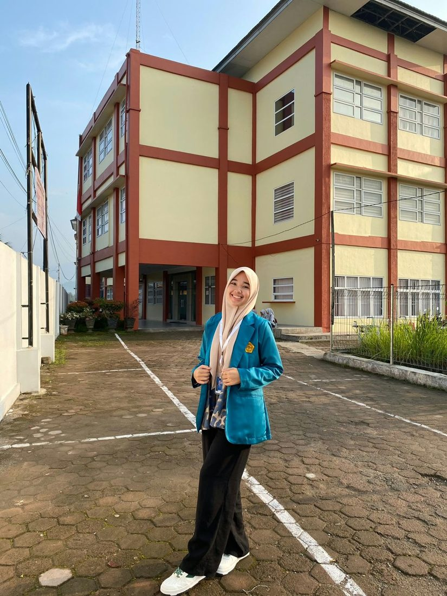
Internship experience
Apotek Keluarga 16
Pharmacy Work Practice (PKF) · Community Pharmacy Intern
A community pharmacy internship as part of the Bachelor of Pharmacy program at STIFARM Padang. I assisted pharmacists with prescription services, drug information, and inventory management in line with pharmacy service standards.
- Pharmaceutical care
- Patient counseling
- Drug information services
- Inventory management
- Pharmacy regulations and ethics
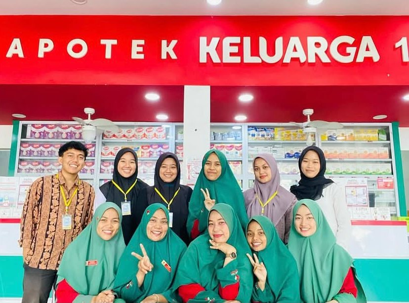
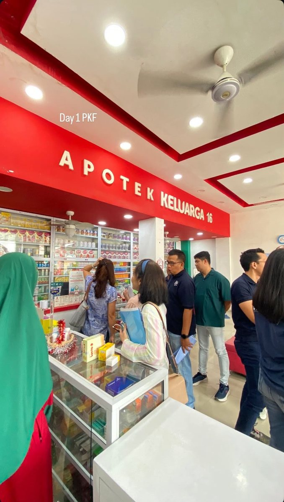
Research project
Thesis research
STIFARM Padang · Bachelor of Pharmacy final project
Total Phenolic Content Analysis and Antioxidant Activity Test of the Ethyl Acetate Fraction of Fermented Garlic (Allium sativum L.) Ethanol Extract Using the DPPH Method.
- Folin-Ciocalteu method
- UV-Vis spectrophotometry
- Gallic acid standard curve preparation
- DPPH antioxidant assay
- Scientific data analysis and reporting
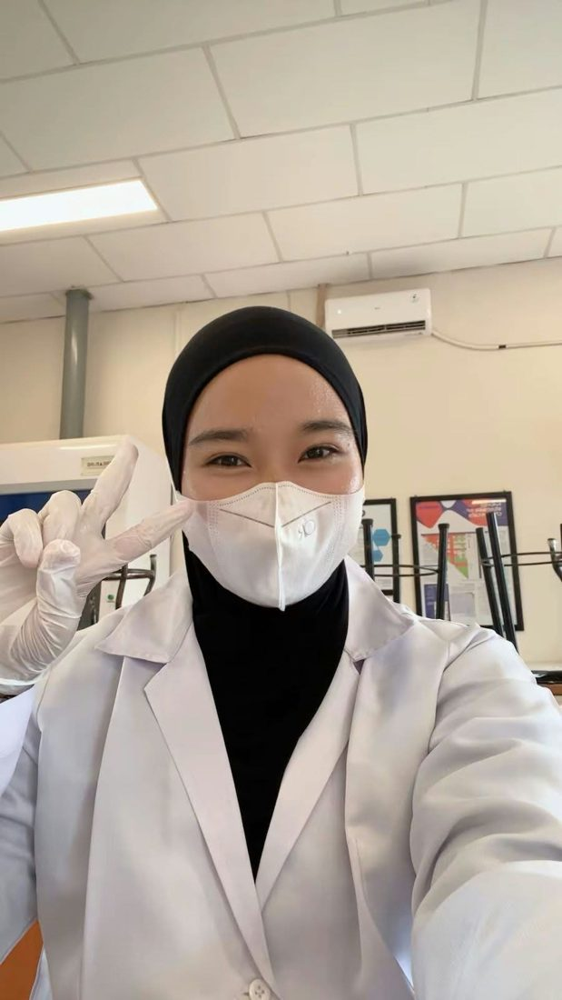
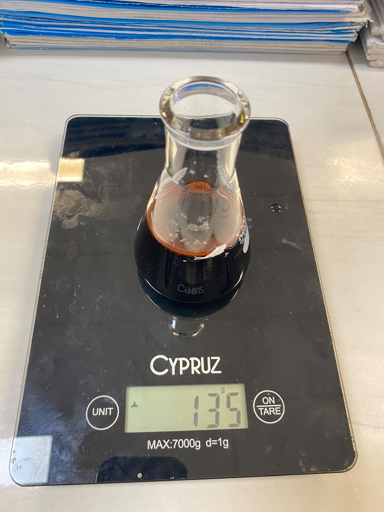
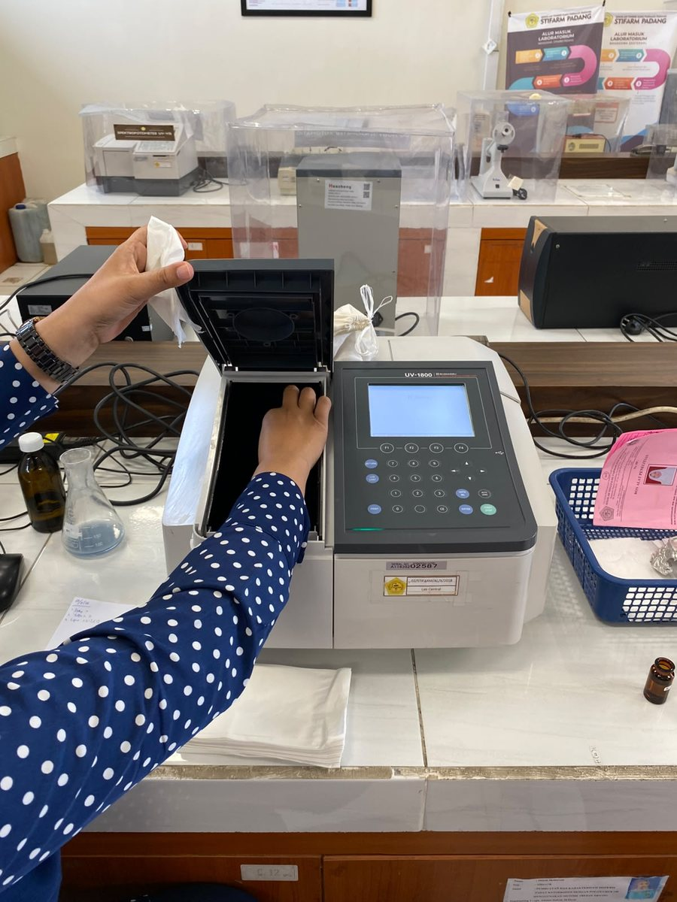
Careful with weighing and dilutions, records data systematically, and writes scientific reports that follow academic writing standards.
2023 – 2026
Organizations & committees
- Committee, LUSTRUM IV STIFARM Padang
- Performer, GEBYAR STIFARM Padang
- Committee, PKKMB new student orientation
- Committee, LKMMF 1 STIFARM Padang
- Committee, Legislative Training II
- Committee, Youth Pledge Day commemoration
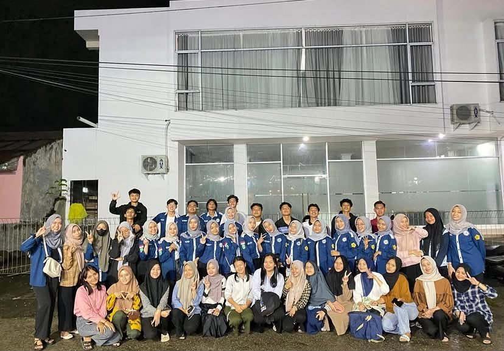
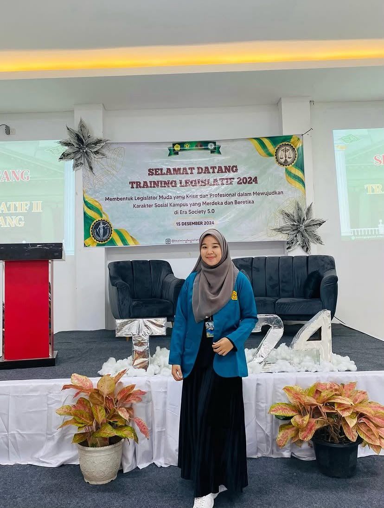
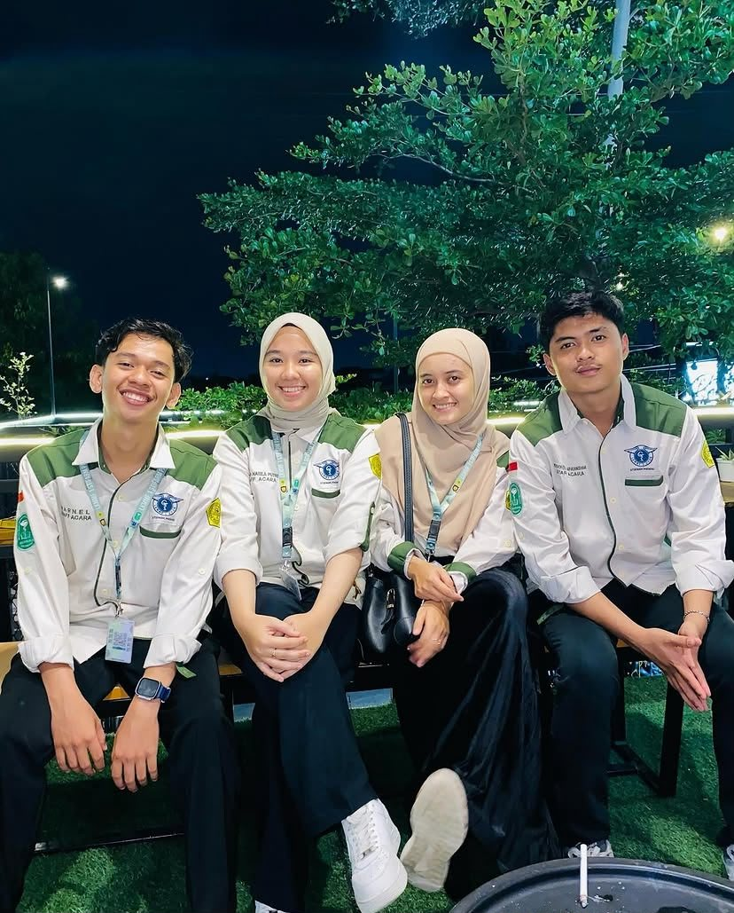
- Webinar: PSPA entrance test review
- Collaboration of Stakeholder (COSH)
- Career & Entrepreneurship Seminar
- Legislative Training STIFARM Padang
- LKMMF 1, BEM STIFARM Padang
- Student Debate Competition
Master of Ceremony · 2024 – 2026
Public speaking & MC
Trusted to host official ceremonies, seminars, and arts performances at STIFARM Padang.
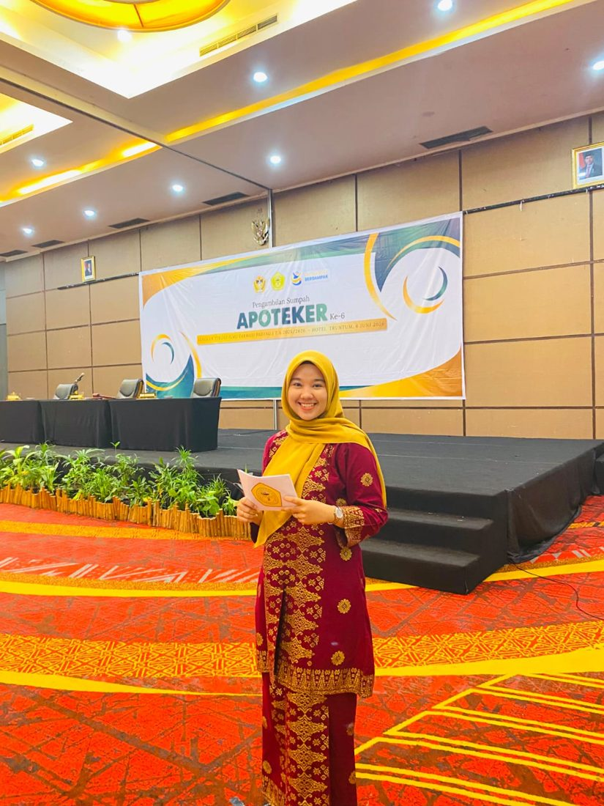
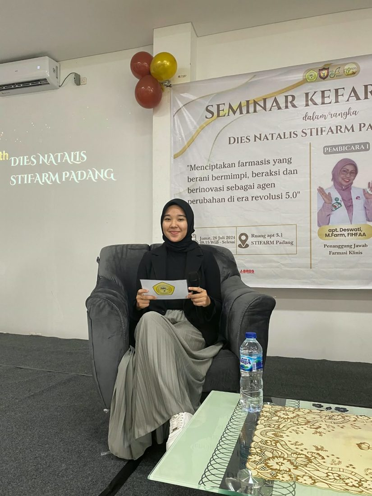
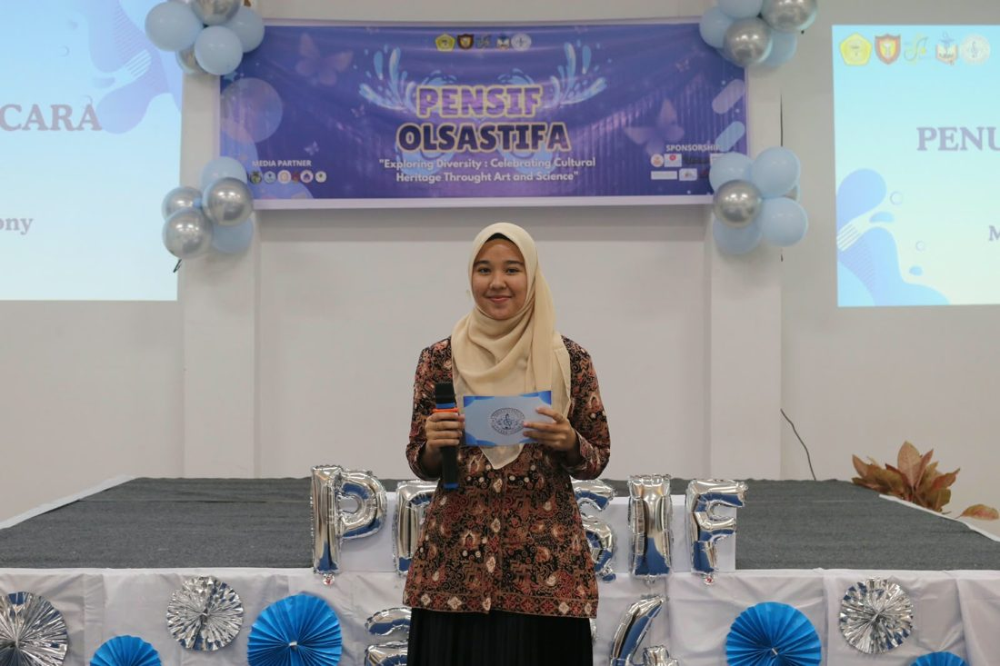
Proof of activities
Certificates
7 certificates and 5 committee decrees. Click any of them to view it full size.
Committee decrees (AKKM)
Student Activity Credit (AKKM) decrees issued by STIFARM Padang. The cover pages are shown; Aisyah's name is listed in the appendix of each decree.
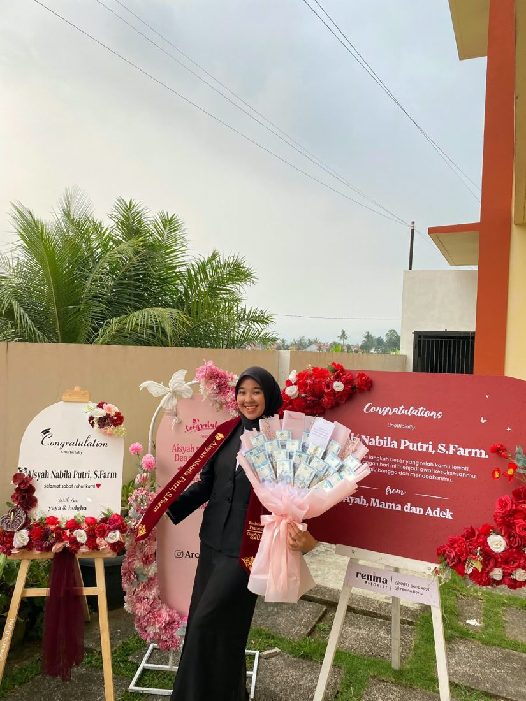
Let's connect
Thank you!
I am open to opportunities in community pharmacy, the pharmaceutical industry, pharmaceutical distribution, and healthcare services.